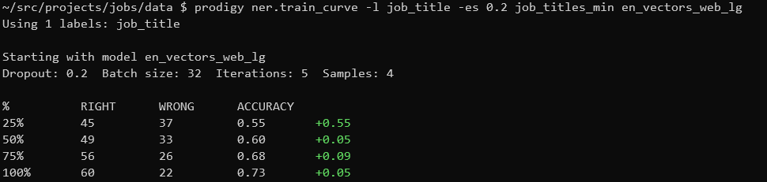

Training a job title NER with Prodigy
In a couple of hours I trained a reasonable job title Named Entity Recogniser for job ad titles using Prodigy, with over 70% accuracy. While 70% doesn’t sound great it’s a bit ambiguous what a job title is, and getting exactly the bounds of the job title can be a hard problem. It’s definitely good enough to be useful, and could be improved.
After thinking through an annotation scheme for job titles I wanted to try annotating and training a model. I tried this with Prodigy 1.7.1 and found the experience really interesting and it does seem like a valuable product. There’s a great tutorial on how to train a NER from scratch in Prodigy that helped me do this.
First I needed to extract the training data into json lines of text, like:
{"text":"Health & Safety Manager"}
{"text":"Field Sales Executive Central London"}
{"text":"HR Manager Branded Company East Midlands"}
{"text":"Account Executive"}
{"text":"Front End JavaScript HTML5 CSS JQuery Developer"}I had a CSV of training data so I transformed it with Pandas:
import pandas as pd
df = pd.read_csv('Train_rev1.csv')
(df
.sample(10000)
[['Title']]
.rename(columns={'Title': 'text'})
.to_json('sample.jsonl', orient='records', lines=True)
)I also needed to create a blank spacy model to tokenize the text for annotation:
python -c 'import spacy; spacy.blank("en").to_disk("./blank_model")'Then I could start annotating the job_title label into a dataset called job_titles:
prodigy ner.manual -l job_title job_titles ./blank_model sample.jsonlIt was pretty quick to make annotations by click and dragging the mouse. If you dragged anywhere within the word it would select the whole word and join to contiguous regions, then press ‘a’ on the keyboard to accept and move on to the next annotation. Sometimes the text wouldn’t be tokenised properly so annotation wasn’t possible, I just skipped those examples. It took me a couple of rounds to decide on what I was annotating (it gets quite subtle what you include), but once I got there it took me about an hour to annotate 1000 examples.
I could then see how the amount of data impacted the model size of an NER model using train-curve which trains a model on successively larger portions of the training set. Each 200 annotations after the first improved accuracy by around 6% so it seems like if I made more annotations it could get better. This trained pretty quickly on a laptop.
prodigy ner.train-curve \
-l job_title \
-es 0.2 \
job_titles_min en_vectors_web_lg \
Finally I could train a model on the whole dataset, leaving a 20% holdout for evaluation.
prodigy ner.batch-train \
-l job_title \
-es 0.2 \
job_titles_min en_vectors_web_lg \
-o job_title_model/The output model was around 73% accuracy and took about 1.4G of disk space. But I wanted to see the kinds of mistakes it made:
prodigy ner.print-stream job_title_model/ sample.jsonl | less
Overall it was pretty good at picking out job titles. There were issues especially when there were extraneous punctuation, and sometimes it wouldn’t capture the whole title. This might be resolved by annotating more examples, and being more consistent in my annotation (I drifted a bit!), or making my scheme a bit simpler. But the results seem good enough to be a useful starting point.
Finally I could export the annotations into jsonlines for reference, or if I wanted to train a model directly.
prodigy db-out job_titles job_title_annotations/The output contains the tokens, the spans tagged and the results.
{
"text": "Health & Safety Manager",
"_input_hash": -1231507245,
"_task_hash": 2039059237,
"tokens": [
{
"text": "Health",
"start": 0,
"end": 6,
"id": 0
},
{
"text": "&",
"start": 7,
"end": 8,
"id": 1
},
{
"text": "Safety",
"start": 9,
"end": 15,
"id": 2
},
{
"text": "Manager",
"start": 16,
"end": 23,
"id": 3
}
],
"spans": [
{
"start": 0,
"end": 23,
"token_start": 0,
"token_end": 3,
"label": "job_title"
}
],
"answer": "accept"
}This is a good start, but even if I can extract the job titles I still need to be able to normalise and relate them.